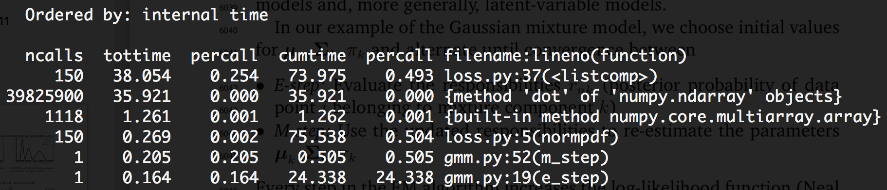
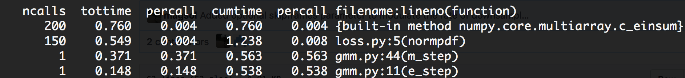

Code
import numpy as np
import scipy.linalg as sla
Recently I’ve been working with some of my students on a paper for the SciPy Conference related to our OrNet project. Part of this involved designing our own Gaussian Mixture Model (GMM). In doing so, I somewhat accidentally-on-purpose stumbled upon the beauty of einsum. So I wanted to briefly motivate its use (expanding upon the short use-case I wrote on my research group’s blog) and show the performance results of re-implementing iterative computations using einsum.
One of the critical steps of this algorithm is to evaluate the probability of any given point \(\vec{x}\) under the model that we’ve learned so far (the current values of \(\vec{\mu}\) and \(\Sigma\). In higher dimensions (as in, higher than 1), this has a pretty tricky formula:
\[ P(\vec{x} | \vec{\mu}, \Sigma) = \frac{\exp{(-\frac{1}{2}(\vec{x} - \vec{\mu})^T \Sigma^{-1} (\vec{x} - \vec{\mu}) )}} {\sqrt{(2 \pi)^2 \det{(\Sigma)} }} \]
It’s…messy. The things that make it particularly tough to efficiently evaluate include:
But wait! That’s not all!
Also critical to the GMM are the update steps: re-estimating the current values of the parameters so they (hopefully) better fit your data. This happens a lot!
In multidimensional wonderlands, the updates of the parameters look something like this:
\[ \vec{\mu}_{ki} = \frac{1}{N_k} \sum_{n = 1}^N r_{kn} \vec{x}_n \]
\[ \Sigma_{ki} = \frac{1}{N_k} \sum_{n = 1}^N r_{kn} (\vec{x}_n - \vec{\mu}_{ki})(\vec{x}_n - \vec{\mu}_{ki})^T \]
The first equation for \(\vec{\mu}_{ki}\)–the \(k^{th}\) component (one of the 50-100) at the \(i^{th}\) iteration (often at least a few dozen)–is a “fairly” easy multiplication of each data point \(\vec{x}_n\) by some number \(r_{kn}\), all summed up and scaled by \(\frac{1}{N_k}\).
The second equation is a lot harder.
For every \(\vec{\mu}_{ki}\) we have a corresponding \(\Sigma_{ki}\). Which, remember, is a full matrix. This involves taking the \(\vec{\mu}_{ki}\) we computed in the first equation, and computing outer products with every data point \(\vec{x}_n\).
“Outer product” is a fancy name for “matrix multiplication”!
import numpy as np
import scipy.linalg as slaSo of course, I initially implemented these two core operations in the way that made the most sense: using numpy functions and Python comprehensions.
For computing \(P(\vec{x})\):
def px1(X, mu, sigma):
det = sla.det(sigma)
inv = sla.inv(sigma)
p = np.array([(x - mu).dot(inv).dot(x - mu) for x in X])
n = 1 / ((((2 * np.pi) ** 2) * det) ** 0.5)
px = np.exp(-0.5 * p) * n
return pxAnd for re-computing \(\mu\) and \(\Sigma\):
def musig1(X, r):
N = r.sum()
mu_next = (r[:, np.newaxis] * X).sum(axis = 0) / N
s = np.zeros(shape = (X.shape[1], X.shape[1]))
for x, ri in zip(X - mu_next, r):
s += (np.outer(x, x) * ri)
sigma_next = s / N
return mu_next, sigma_nextThese were computational bears. In px1, the line starting p = ... is a huge computational cost: doing two dot products inside a loop over all the data points \(\vec{x}_n\) is really, really expensive.
And in musig1, the operation to compute the next value of \(\Sigma\) involves computing the outer product of every \(\vec{x}_n\) subtracted by the current value of \(\vec{\mu}\).
Suffice to say, when it came time to actually run the algorithm, it shouldn’t come as a surprise that, with a dataset of roughly 130,000 points in 2 dimensions, each iteration of our algorithm took about 52 seconds.
…the vast majority of which was spent computing dot products!

More than half of a single iteration was devoted to dot products in the px1 function above. That’s bad.
Just for grins, let’s time everything:
X = np.random.random(size = (130000, 2)) # To simulate the data I was working with.
mu = X.mean(axis = 0) # Compute an actual mean.
sigma = np.array([[5, 0], [0, 5]])
r = np.random.random(130000)%timeit px1(X, mu, sigma)267 ms ± 3.88 ms per loop (mean ± std. dev. of 7 runs, 1 loop each)%timeit musig1(X, r)563 ms ± 9.38 ms per loop (mean ± std. dev. of 7 runs, 1 loop each)That’s a full second of computation just for 1 of the Gaussian components (i.e., one pair of \(\mu\) and \(\Sigma\)). Crank that number of components up to 50 and, well, there’s your ~50-second runtime.
I was admittedly at a bit of a loss here, considering I was already using NumPy constructs. But at the same time, these were highly structured linear algebra operations; there had to be something more efficient?
einsum to the RescueDISCLAIMER: I should highlight that I didn’t immediately land on this. It took some Googling around and some sitting and thinking before I figured out how this could be used. Then it took some more trial-and-error to actually get it to work.
But work, it did. Holy crap.
np.einsum is an implementation of the Einstein Summation, which is a super-fancy term for a cool (but admittedly tricky-to-grasp) shorthand notation for dealing with multiplications and summations of vectors, matrices, and tensors.
I won’t rehash the basic examples I’ve found across the web that helped me understand how this works, but I will give special emphasis to two articles:
I found #2 particularly accessible, but I’d recommend both.
It took some doing, but I managed to rewrite both equations using einsums:
def px2(X, mu, sigma):
det = sla.det(sigma)
inv = sla.inv(sigma)
###
p = np.einsum('ni,ji,ni->n', X - mu, inv, X - mu)
###
n = 1 / ((((2 * np.pi) ** 2) * det) ** 0.5)
px = np.exp(-0.5 * p) * n
return pxdef musig2(X, r):
N = r.sum()
mu_next = (r[:, np.newaxis] * X).sum(axis = 0) / N
###
sigma_next = np.einsum("ni,nj->ij", (X - mu_next) * r[:, np.newaxis], X - mu_next) / N
###
return mu_next, sigma_nextThe musig2 use actually ended up being a straightforward application of the “each row of \(A\) multiplied by \(B\)” rule at the end of the #2 link above, with the slight wrinkle of making the first axis, n, the one that is summed over in the result.
The one in px2 was a lot harder, and for a time I wasn’t convinced it could be done. At one point I was able to basically split the operation in two einsums that were more or less identical to the one in musig2; it basically involved a repeated application of “multiply each row of \(A\) by \(B\)”. But I kept hunting around the web, particularly for examples of multiplying many matrices together, and eventually managed to figure this one out.
It boiled down to basics of how einsum works: I knew the output had to be a list of numbers n long, and that the first and third inputs were identical (ni). The key was: if everything had 2 axes going in, but only 1 axis was coming out, then all three inputs needed to share one axis that could be summed over.
Just for fun, let’s run our examples again:
%timeit px2(X, mu, sigma)6.4 ms ± 93.1 µs per loop (mean ± std. dev. of 7 runs, 100 loops each)%timeit musig2(X, r)6.15 ms ± 49.7 µs per loop (mean ± std. dev. of 7 runs, 100 loops each)To sum up:
numpy.dot to a single einsum decreased runtime of a single iteration from 300ms to 7ms, a speed-up of over 40x.numpy.outer products to a single einsum decreased runtime of a single iteration from 847ms to 7.5ms, a speed-up of over 110x.I re-ran cProfile to see what my performance gains were, and holy crap Batman.

Not only was my total runtime down from ~52 seconds per iteration to a mere 1.5 seconds per iteration, but the most time-consuming block of my code was now einsum itself!
Of course, I wasn’t going to argue with a full order of magnitude reduction in runtime.
Our SciPy paper is still under review, so feel free to head over there and check out how we’re putting GMMs to use for bioimaging!
@online{quinn2018,
author = {Quinn, Shannon},
title = {An Einsum Use-Case},
date = {2018-06-19},
url = {https://magsol.github.io/2018-06-19-an-einsum-use-case},
langid = {en}
}